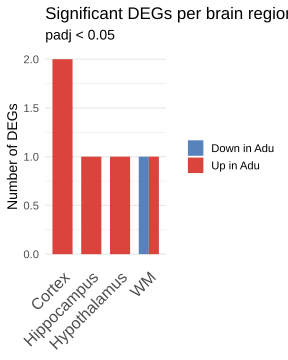

To characterise region-specific transcriptional responses of microglia to aducanumab treatment, microglia were isolated from the microglia subsetted object (Kai´s object).
The Xenium raw counts assay was set as the default to ensure that downstream pseudobulk aggregation and DESeq2 normalization operated on unmodified integer counts. Cells lacking a brain-region assignment were excluded prior to differential expression analysis to avoid confounding by spatially unassigned transcriptomes.
Cell counts per region
The table below enumerates the total number of microglial cells captured per brain region and their distribution across treatment groups (aducanumab, Adu; isotype control IgG).
To identify transcriptional changes induced by aducanumab in a spatially resolved manner, pseudobulk differential expression analysis was performed independently for each brain region.
Within each region, raw Xenium counts were summed per biological sample using AggregateExpression, yielding one pseudobulk profile per animal (n = 3 Adu, n = 3 IgG). Differential expression between treatment groups was then assessed using DESeq2, as implemented via Seurat’s FindMarkers interface with test.use = "DESeq2" and no minimum expression filter (min.pct = 0), ensuring all detected genes were considered.
For each eligible region, results are displayed as a volcano plot, highlighting genes reaching statistical significance (Benjamini-Hochberg-adjusted p < 0.1), alongside a table of significant differentially expressed genes (DEGs), ranked by adjusted p-value.
# Build one-row CSV summarising DEGs per region (gene names + counts)deg_summary <-imap(de_by_region, \(res, reg) { sig <- res$significant_results |>rownames_to_column("gene") up_genes <- sig |>filter(avg_log2FC >0) |>pull(gene) down_genes <- sig |>filter(avg_log2FC <0) |>pull(gene)tibble(region = reg,up =paste(up_genes, collapse =", "),down =paste(down_genes, collapse =", "),total =nrow(sig) )}) |>list_rbind()# Pivot to wide format: one column per region per directiondeg_wide <- deg_summary |>pivot_wider(names_from = region,values_from =c(up, down, total),names_glue ="{region}_{.value}") |>mutate(cell_type ="Microglia", .before =1)write_csv(deg_wide, "deg_number/DEG_microglia.csv")
Summary visualisations
The following figures integrate findings across all brain regions to facilitate cross-regional comparison of microglial transcriptional responses to aducanumab treatment.
DEG counts per region
To provide an overview of the magnitude and directionality of transcriptional responses across brain regions, the total number of significant DEGs (Benjamini-Hochberg-adjusted p < 0.1) was tallied per region and stratified by direction of effect: genes upregulated in aducanumab- treated animals relative to IgG controls (Up in Adu) and genes downregulated (Down in Adu). Regions with no significant DEGs are absent from the plot.
Code
deg_counts <-imap(de_by_region, \(res, reg) {if (nrow(res$significant_results) ==0) return(NULL) res$significant_results |>rownames_to_column("gene") |>mutate(Region = reg,Direction =ifelse(avg_log2FC >0, "Up in Adu", "Down in Adu"))}) |>compact() |>list_rbind() |> dplyr::count(Region, Direction)ggplot(deg_counts, aes(x = Region, y = n, fill = Direction)) +geom_col(position ="dodge", width =0.7, alpha =0.9) +scale_fill_manual(values =c("Up in Adu"="#d73027", "Down in Adu"="#4575b4")) +labs(title ="Significant DEGs per brain region",subtitle ="padj < 0.1",x =NULL,y ="Number of DEGs",fill =NULL ) +theme_minimal(base_size =14) +theme(panel.grid.major.x =element_blank(),axis.text.x =element_text(size =16,angle =45, hjust =1))

Cross-region log2FC heatmap
To identify genes with consistent or divergent regulation across brain regions, a hierarchically clustered heatmap was constructed for all genes reaching statistical significance (adjusted p < 0.1) in at least one region.
Each cell displays the log2 fold change (Adu vs IgG) for that gene–region combination. The colour scale is symmetric and centred at zero, with red denoting upregulation in aducanumab-treated animals and blue denoting downregulation. Asterisks mark gene–region combinations that individually meet the adjusted p < 0.1 threshold. Genes and regions were clustered hierarchically by their fold-change profiles to reveal co-regulated gene modules and similarities between brain regions.
To simultaneously visualise the effect size, statistical significance, and regional distribution of all significant DEGs, a dot plot was generated in which each point represents a single gene–region observation.
The horizontal position encodes the log2 fold change (Adu vs IgG), dot size reflects the strength of statistical evidence (−log10 adjusted p-value), and colour denotes the brain region. Genes are ordered along the vertical axis by their mean log2 fold change across all regions in which they were significant, placing consistently downregulated genes at the top and upregulated genes at the bottom.